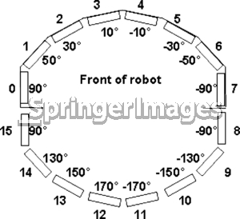

Sonar¶
Cacic have two sonar arrays (front and rear), sonar or ultrasoud is a sensor that uses sound wave for detect object

Especs¶
- Range of view: 0.1 m ~ 5 m
- Aquisition rate: 25 Hz
Note
If the sonar doesn’t view anything in its cone of view, it will send to the software the max range.
Geometry¶
There’re 16 sonars wich have a unique location as seen in the image below
Sensitivity Adjustment¶
The driver electronics for each array is calibrated at the factory. However, you may adjust the array’s sensitivity and range to accommodate differing operating environments. The sonar gain control is on the underside of the sonar driver board, which is attached to the floor of each sonar module.
By Mobile Robots©
Hint
See more in the manual.
Software¶
We use the P2OS to read the sonars readings.